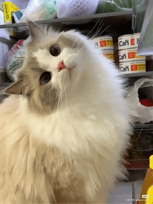
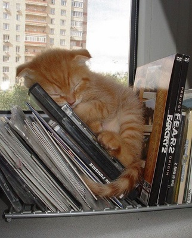
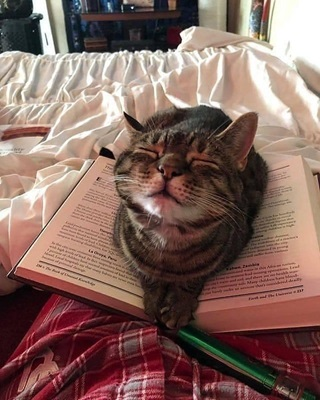
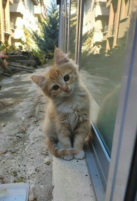
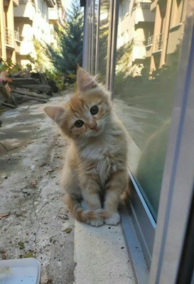

¡Esta es una increible página de gatos!
Aquí celebramos todo lo que hace especiales a los gatos: su elegancia, travesuras y compañía. Encuentra consejos de cuidado, historias adorables y curiosidades felinas que te harán amar aún más a estos mágicos compañeros. ¡Porque un mundo con gatos es un mundo mejor! 😻
¿Por qué los gatos son tan lindos?
Es imposible no derretirse al ver un gato acurrucado o haciendo sus travesuras. Pero, ¿qué es lo que los hace tan irresistibles? Hay varias razones que explican por qué estos pequeños felinos conquistan nuestros corazones.
Primero, sus características físicas son casi perfectas para llamar nuestra atención. Sus ojos grandes y expresivos, caritas redondeadas y patitas suaves activan en nosotros una respuesta instintiva de cuidado y ternura, similar a lo que sentimos por los bebés. Esto tiene mucho que ver con el concepto de "esquema infantil", una idea desarrollada por el etólogo Konrad Lorenz, quien descubrió que ciertos rasgos como cabezas grandes y ojos prominentes nos provocan empatía.
 Además, está su personalidad. Los gatos tienen esa mezcla única de independencia y cariño. Pueden pasar horas explorando su entorno con gracia o simplemente durmiendo en los lugares más curiosos, y luego venir a acurrucarse contigo como si fueras su favorito en el mundo. Esos momentos nos hacen sentir especiales y conectados con ellos.
Y no podemos olvidar su comportamiento. Desde pequeños saltos torpes hasta movimientos sigilosos de cazador, los gatos siempre parecen estar entre lo gracioso y lo elegante. ¡Y esas patitas amasando como si fueran chefs en miniatura! Todo lo que hacen parece salido de un video hecho para enamorarnos.
En resumen, los gatos combinan una apariencia adorable con una actitud que nos mantiene intrigados y enamorados. Por eso, es fácil entender por qué no solo los queremos en nuestras vidas, sino que también llenamos internet con fotos y memes de ellos. 🐾✨
 
